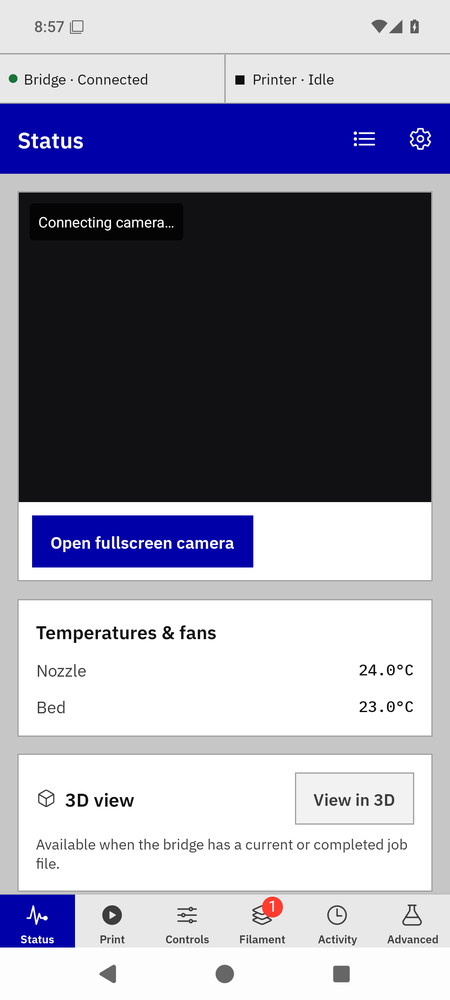
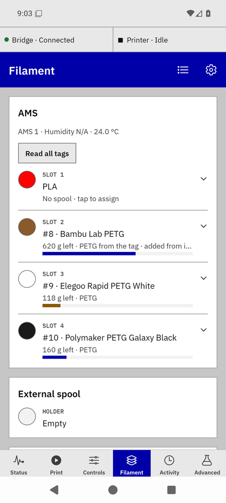
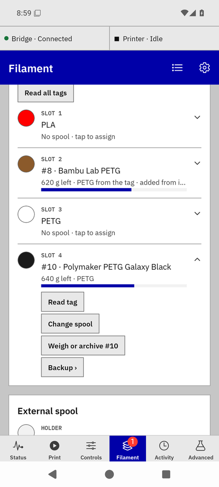

Daily use
Most days you open the app, glance at Status, start a print from the Print tab, and look at Filament when a spool changes. Everything the bridge can do for a spool happens on the Filament tab.
Status

Status, printer idle.
- The two strips at the top say whether the bridge is reachable and what the printer is doing ("Printer · Idle", "Printing"). When the app can't reach the bridge it keeps showing the last data it had and says so in a red band.
- The camera streams while the tab is open; Open fullscreen camera for a bigger view. "Connecting camera…" is normal for a few seconds; "Camera access rejected" means the pairing or key is wrong (Settings).
- Print progress appears while a print runs: percent, layer, time left, and the filament line (see Printing and charges).
- Temperatures & fans, then 3D view of the current or last job, then Quick actions: Pause, Resume, Stop (asks first), Skip objects when the printer supports it, Light on/off. Pause and Stop only enable while a print is running and the live connection is up.
- Issues from the printer (HMS codes) show in a card at the top with Bambu's wiki link; auto-refill notices show there too.
Starting a print from the phone
- Open Print. It lists the
.3mf files on the printer's storage, newest first; the one printing now is pinned to the top with a "printing now" tag.
- Pick the slot the file should print from: the tiles read External and AMS 1–4. This covers single-filament files; multi-filament jobs are started from the slicer.
- If the slot you picked has no spool assigned, the tab says so: "No spool in slot 3 · this print would go uncharged" with an Assign shortcut. Assign first, or the grams land as a card for you to settle after the print.
- Tap Print on the file. The button is disabled while the printer is busy or the live connection is down; the line under the title says why ("Printer: Printing · Connection: Live").
Prints started from Orca or the printer's screen are picked up by the bridge too; they show on Status and are charged the same way.
The Filament tab

Filament tab, every slot with its spool.

A slot's drawer.
One row per AMS slot and one for the external holder. Each row reads, top to bottom: the slot number; the spool ("#9 · Elegoo Rapid PETG White") or, with no spool, the material the printer reports and "No spool · tap to assign"; grams left and the material; a bar for how much is left; and any status line (a backup chain, "last seen 45 s ago", "reading tag…", a tag read's result).
- The swatch is the spool's colour from Spoolman. A thin ring in another colour means the printer declares something different for that slot (a refill backup does that on purpose).
- The bar is Spoolman's figure for an assigned spool, and the printer's own estimate for an unassigned Bambu spool.
- Tap a row to open its drawer: Read tag, Change spool or Assign a spool, Weigh or archive, Load, Backup. Tap again to close it; one drawer is open at a time. Empty slots have no drawer.
- Read all tags sits above the rows. It and Read tag work only while the printer is idle.
- Cards at the top of the tab are things that need you: a finished print with grams nowhere to go, or a backup the printer didn't confirm.
- Recent prints at the bottom lists the last ten prints and what they were charged, with "Wrong spool?" on each.
How spools get into slots, by tag or by hand: Spools and Spoolman.
Activity
What happened, newest first: prints started and finished, errors, spools the bridge adopted from a tag ("New spool #8 · … · AMS A · slot 2 (from its RFID tag)"), refill switches, charges. Long-press an entry to dismiss it.
Spool changes show here too: a spool linked to or removed from a slot, a slot the AMS released ("AMS A · slot 1: #6 released · The AMS reported the slot empty."), a link the bridge refused and why ("AMS A · slot 1 couldn't take #11 · AMS A · slot 1 reports PC; #11 is PLA…"), a slot set to a spool's material, and one line per finished print with the grams it charged ("large inner diagonal cup: #10 −49.5 g"). A print it could not fully charge says "charge needs review".
Settings
- Bridge: the remote (Tailscale) and LAN addresses, the API key, "Save & probe" and the saved home networks.
- Printers: add one, open the dashboard.
- Spoolman: where spools live; the switch "Show Spoolman spools in Orca" with the reason it is on or off; "Open Spoolman" when the bridge knows Spoolman's web address.
- Appearance: system, dark or light.
Bambu Bridge manual · for bridge 0.7.0b1 and app 0.21.0-beta.9. Independent community software, AGPL-3.0-only.